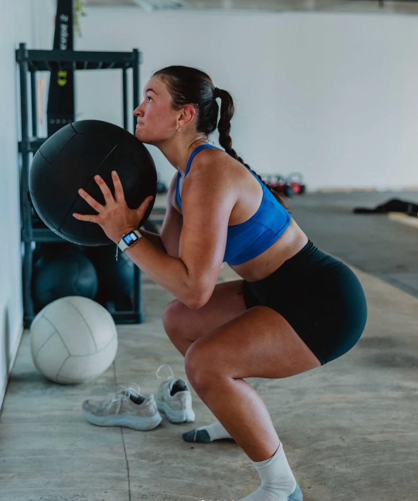

A connection that crossed continents
It started with
one hello.
In Australia.
Family. Movement. Kindness.
The feeling of belonging. A reason to come together. A welcome that makes room for you.
Australia
2024Home
Our next chapter
2024Home
Our next chapter

Rachel landed in Australia knowing nobody. A workout changed that.
At a wellness event, she was paired with someone for the workout. They became friends, and stayed friends. At another class, it happened again.
Those connections changed her experience of a place that was completely new to her. Movement gave them something to do together. Being introduced gave them somewhere to start.
Now, Rachel is bringing that feeling home. As a personal trainer and Pilates instructor, she knows how to lead a class. With KIN, she wants to make meeting people feel just as much a part of it.
Rachel Feldberg
Founder of KIN Club
Founder of KIN Club